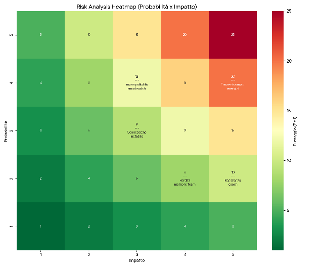

5 analisi rischi
Analisi dei rischi
Tabella di Identificazione e Valutazione dei Rischi
I rischi sono stati classificati in base alla probabilità di accadimento e all'impatto sul business value finale (scala 1-5).
| Categoria | Descrizione | Probabilità | Impatto | Risk Score | Mitigazione |
|---|---|---|---|---|---|
| Tecnologico | Il sistema potrebbe non riconoscere correttamente la transizione di alcuni esercizi. | 4 | 5 | 20 | Implementazione di un "Fallback Trigger" (transizione manuale) rapido per forzare l'avanzamento se l'automatismo fallisce. |
| Operativo | Un macchinario potrebbe essere temporaneamente occupato in palestra. | 3 | 3 | 9 | Implementazione di uno "Skip/Reorder Button" per permettere all'atleta di saltare/riordinare l'esercizio con due tocchi. |
| Tecnologico | Prestazioni incoerenti tra diversi modelli di smartwatch (es. versioni vecchie vs nuove). | 4 | 3 | 12 | Definizione di una lista di "Dispositivi Certificati" (es. Apple Watch Series 6+). |
| Ambientale | Connessione instabile o assente nei padiglioni fieristici. | 3 | 3 | 9 | L'orologio salva i dati nella sua memoria interna privata. I dati vengono trasferiti appena torna la rete (Offline-First). |
| Organizzativo | Un membro del team abbandona il progetto durante lo sviluppo. | 2 | 4 | 8 | Pair programming su task critici, documentazione rigorosa e condivisione settimanale del codice per evitare colli di bottiglia. |
| Culturale | Gli allenatori preferiscono gli strumenti attuali o trovano la nuova dashboard estranea alle loro abitudini lavorative. | 2 | 5 | 10 | Coinvolgimento attivo di un gruppo di coach fin dallo scoping . Conduzione di sondaggi e interviste per capire i processi attuali |
Heatmap dei Rischi
Il Risk Score è calcolato come R \= P x I 
Gestione dei Rischi Critici (Area Rossa)
L'analisi ha evidenziato un rischio ad alta priorità relativo all'incertezza tecnica degli algoritmi di activity recognition. Data la natura critica di questo componente per il valore di business, la strategia di gestione si dividerà in due fasi:
- Analisi Preventiva: Verrà condotta una Proof of Concept (PoC) nelle prime fasi del ciclo di vita del progetto. L'obiettivo è validare la fattibilità tecnica e stabilire una "baseline" di accuratezza. I costi per lo sviluppo e il test della PoC saranno coperti interamente dal budget della "Riserva di Contingenza" (€24.700), garantendo la sostenibilità finanziaria del piano di mitigazione.
- Piano di Mitigazione: Qualora la PoC evidenziasse performance insufficienti, il progetto prevede l'implementazione di un "manual trigger" in alcune fasi dello User Flow.
Precisazioni sul piano di Mitigazione
La mitigazione del rischio tecnico tramite l'inserimento di un'interazione manuale deve necessariamente tenere conto del contesto d'uso. Poiché l'utente si trova in una condizione di elevato stress fisico e affaticamento, il "manual trigger" deve rispettare i seguenti criteri di usabilità:
- Interazione a basso carico cognitivo: Durante sforzi intensi, la precisione motoria diminuisce, prevedere elementi interattivi semplici da utilizzare, ad esempio schiacciare bottoni laterali dello smartwatch rispetto a toccare lo schermo (che potrebbe essere bagnato dal sudore)
- Feedback Immediato: Il sistema deve fornire un feedback immediato del cambio esercizio, riducendo la frustrazione dell'utente e mantenendo alto il Business Value percepito.
- Fallback Immediato: In caso di errore nell'input manuale (es. cambio esercizio sbagliato), deve esistere una via di "Undo" altrettanto rapida.